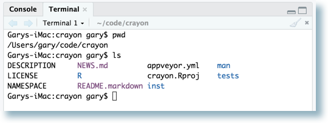
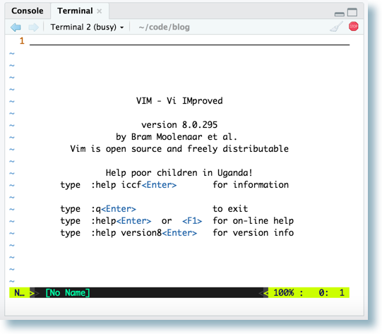
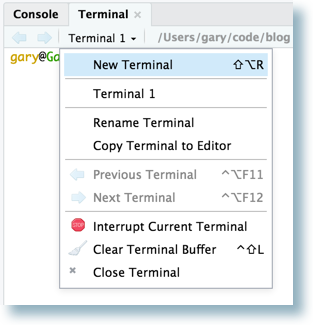
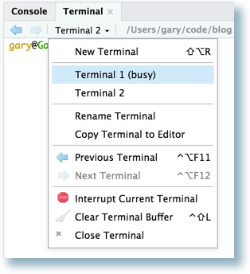
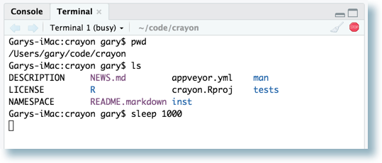
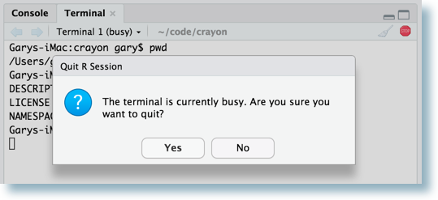
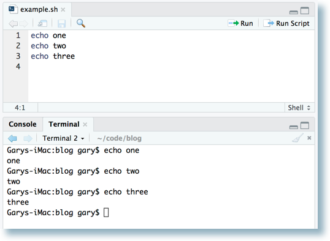
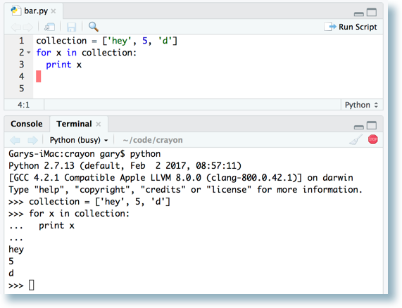
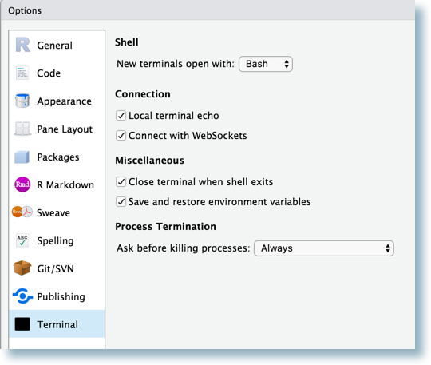
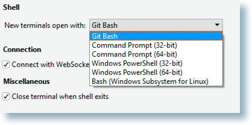

2017-08-11
Today we’re excited to announce availability of our first Preview Release for RStudio 1.1, a major new release which includes the following new features:
You can try out these new features in the RStudio Preview Release.
Over the next few weeks we’ll be blogging about each of these new features. We start today with an overview of the integrated support for full-featured system terminals via the Terminal tab.
The Terminal tab provides access to the system shell within the RStudio IDE. Potential uses include advanced source-control operations, execution of long-running jobs, remote logins, and interactive full-screen terminal applications (e.g. text editors, terminal multiplexers).
The Terminal tab is next to the Console tab. Switch to the Terminal tab to automatically create a new terminal, ready to accept commands. If the tab isn’t visible, show it via Shift+Alt+T or the Tools -> Terminal -> Move Focus to Terminal menu. Here’s a terminal with the output of some simple commands:

Support for xterm enables use of full-screen programs:

Additional terminal sessions can be started using the New Terminal command on the terminal drop-down menu, or via Shift+Alt+R.

Each terminal session is independent, with its own system shell and buffer. Switch between them using the arrows next to the drop-down menu or by clicking on the terminal’s name in that menu.

Programs running in a terminal do not block the rest of the RStudio user-interface, so you can continue working in RStudio even when the terminal is busy. On Mac, Linux, or Server, a busy terminal will have (busy) next to its name, and the close [x] changes to a stop button:

If there is a busy terminal (Mac, Linux, or Server) trying to exit RStudio (or any other operation that will stop the current R session) will give a warning. Proceeding will kill the running programs.

When editing a shell script in RStudio, the Run Selected Line(s) command (Cmd+Enter on Mac / Ctrl+Enter on others) executes the current line, or selection, in the current terminal. This can be used to step through a shell script line-by-line and observe the results in the terminal.
Here’s an example where Cmd+Enter was hit three times, with focus on the editor and the cursor starting on the first line.

In other text file types, including R source files, the new Send to Terminal command (Cmd+Alt+Enter on Mac, Ctrl+Alt+Enter on others) may be invoked to send the current selection to the current terminal. This can be handy for other languages with a command-line interpreter. Below, Python was started in the current terminal, then Cmd+Alt+Enter was used to step through each line of the Python source file.

To close a terminal session, use the Close Terminal command on the Terminal dropdown menu, click the [x] on the far-right of the Terminal pane toolbar, or exit from within the shell itself.
If the Terminal tab is not useful to your workflows, simply click the [x] on the tab itself to close it, and it will not reappear in future RStudio sessions. To restore the tab, start a terminal via the Tools/Terminal/New Terminal menu command.
Various aspects of the terminal can be configured with the new Terminal Options pane. Invoke with Tools/Global Options… and click on the Terminal icon.

On the RStudio IDE for Microsoft Windows, you can select between Git-Bash, Command Prompt, Windows PowerShell, or the Windows Subsystem for Linux. The choices available depend on what is installed on the system.

We look forward to seeing how people use the Terminal tab in RStudio 1.1. If you want to give it a test drive, please download the RStudio Preview Release.
We hope you try out the preview and let us know how we can make it better.